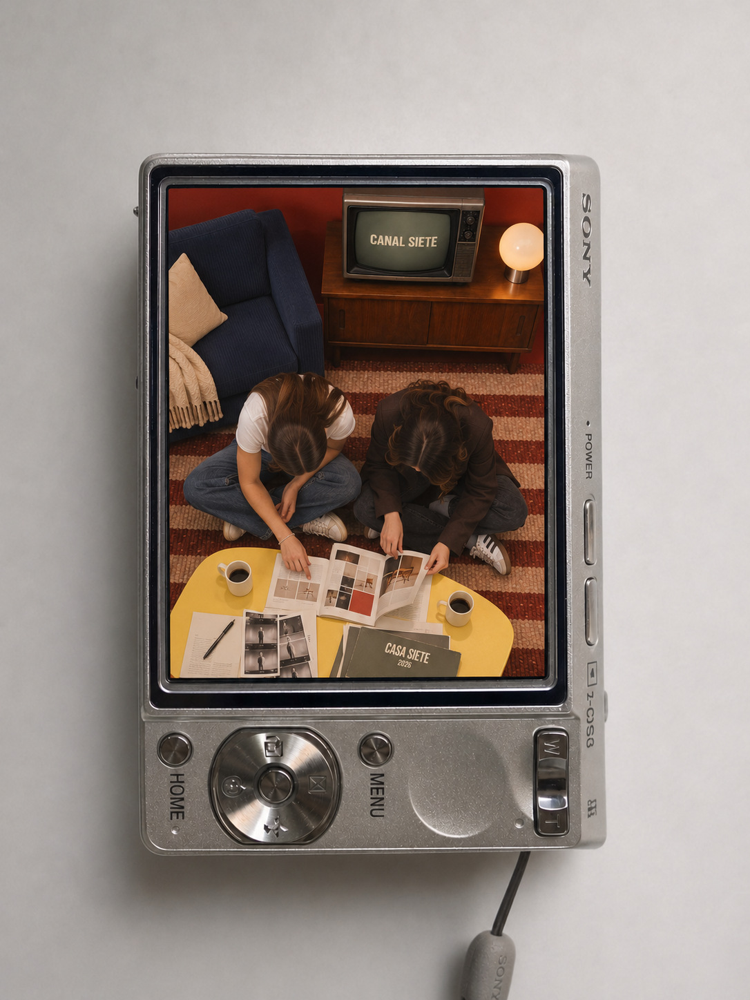
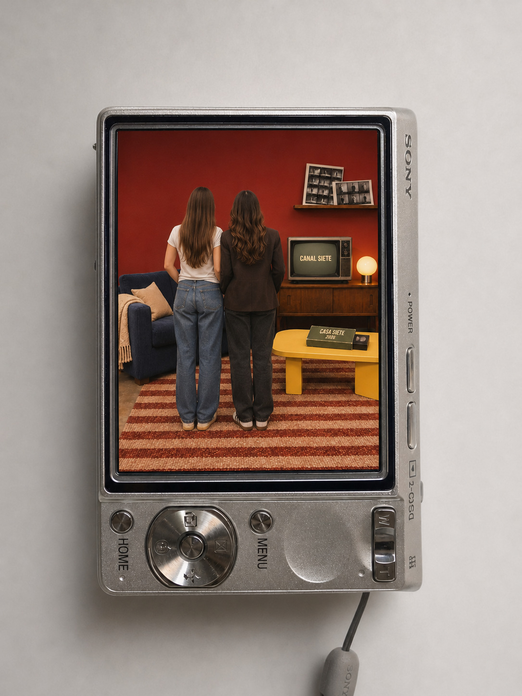
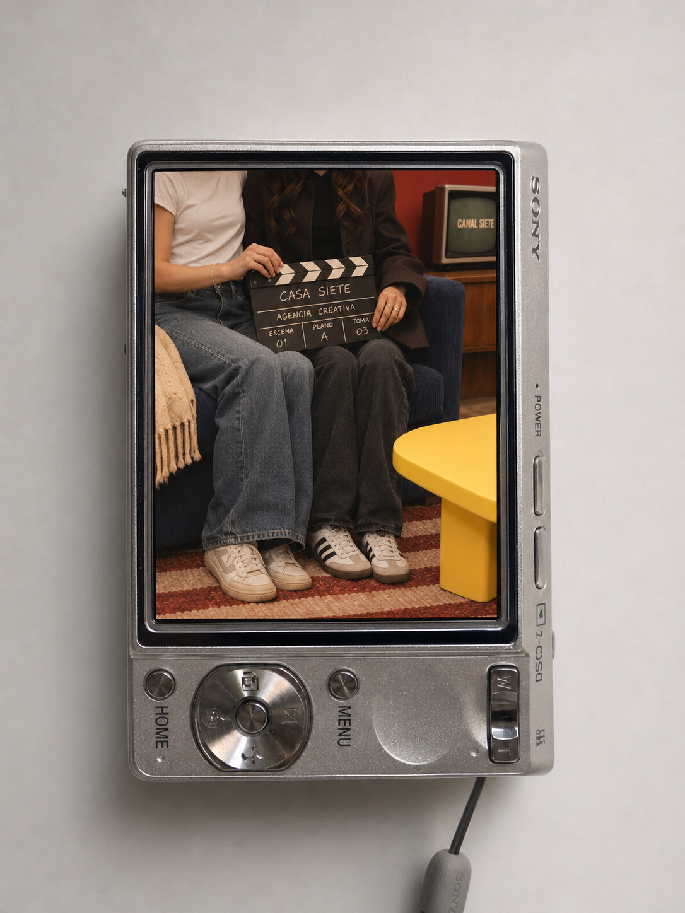
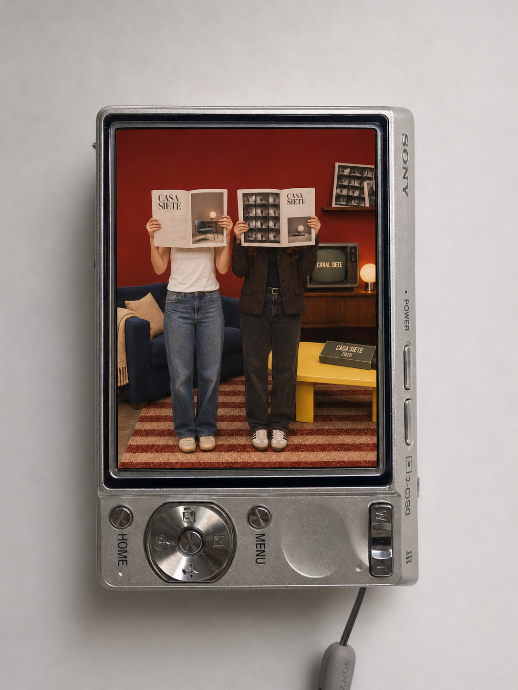

( Casa Siete · Agencia creativa )
Campañas, contenido para redes y branding desde la Ciudad de México, para que tu marca se vea diferente y se sienta cercana.
Proyectos seleccionados




Estas somos nosotras :)(Fundadoras)
Fundadoras & directoras creativas
Somos Casa Siete, una agencia creativa en la Ciudad de México. Creamos marcas, campañas y contenido para redes: del branding completo a la sesión de foto, el video y el feed que lo cuenta todo.
Nos gusta pensar cada proyecto como una casa: un lugar con estrategia, estética y carácter propio, donde cada pieza tiene una razón de estar. Mezclamos producción real con IA y CGI cuando la idea lo pide, siempre con nuestra dirección.
Trabajamos codo a codo con cada marca, de la primera plática a la entrega, y armamos el equipo justo para cada proyecto. En 12 a 15 días hábiles, tu idea ya vive en el mundo.
Trabajemos juntas →